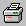

 Click the Print button to print a drawing of your current design.
The Print button that is accessed from the File menu opens the Print dialog box. This dialog box allows you to choose a printer and to control the print format and number of copies.
The Print button located on the Main Toolbar sends a drawing of your truss directly to the current printer. It does not open the Print dialog box except for the first time it is pressed.